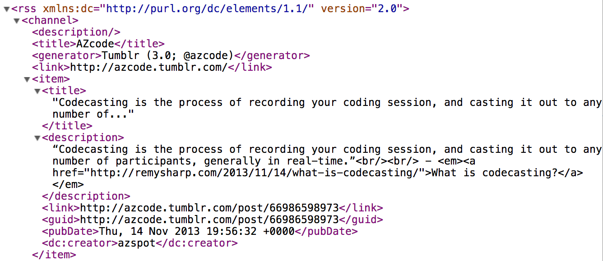

RSS for the Perplexed
Naum Trifanoff / @naum
What is RSS?
Rich Site Summary
Really Simple Syndication
A structured “view” of a site, with a set of standard “field” tags.
An XML file

What can RSS do for you?
- Turbocharge your web reading experience.
- Receive blog or site updates without having to visit the site.
- Organize your favorite web destinations in chronological or categorical order.
- Allow you to peruse content with minimal interspersed advertising and other non-relevant bits.
Which RSS Reader Should I Use?
Web? Desktop? Mobile?
Sync?
RSS Readers

Why RSS?
The Power of the RSS Reader
Without RSS readers, the long tail would be cut off. The rich would get richer: only the big-name sites get regular readership without RSS, so the smaller sites would only get scraps of occasional Twitter links from the few people who remember to check them regularly, and that number would dwindle. …In a world where RSS readers are “dead”, it would be much harder for new sites to develop and maintain an audience, and it would be much harder for readers and writers to follow a diverse pool of ideas and source material.
On RSS Usage
I enjoy reading RSS… It has totally supplanted the time I used to allot to “reading the newspaper”. …I keep pace with [thousands] of subscriptions. No, I certainly do not read every item and probably only click through less than 10-20% of items. Not true for all sites, as the frequently updated sites get clicked at a 2-3% rate whereas treasured, infrequently updated sites have all their items read. But I don’t fret over unread items and even if I miss reading for a day or two, I feel no obligation to “catch up”, and instead, if I want to review items of interest I may have missed, I use the “Search” feature.
What is OPML?
Outline Processor Markup Language
A collection of feeds that you can import/export into other tools